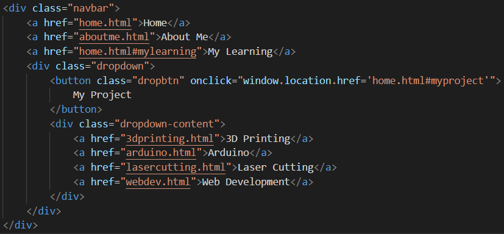
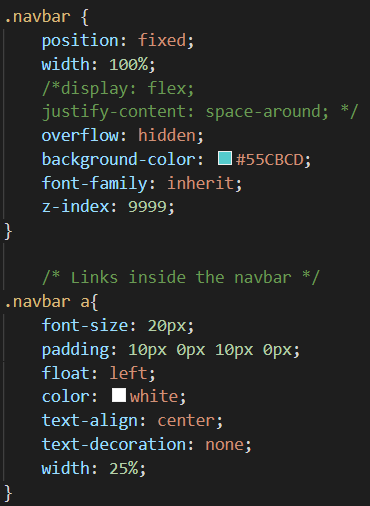
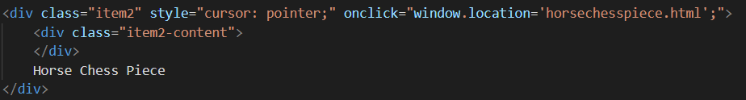

Website Development
Website development seemed like a very daughting task at the start, where my lecturer Mr Steven Chew told us to watch a video by Jake Wright as a start to learning the basics of website design. There are three basic "parts" of a website, a .html (HyperText Markup Language) which is the basic formatting and text of the webpage, a .css (cascading style sheet) which further helps with formatting, adding features, as well as make the webpage much more beautiful by adding backgrounds, pictures and more, last but not least there is a .js (javascript) which helps with more complex functions and features such as doing simple animations on a webpage. JavaScript is a programming language and is very versatile in its applications. However, I chose not to utilise JavaScript for this website as I did not find that it added much to my website and instead, concentrated on using css to make my webpage look neater.

Learning how to code html and css
Throughout this module, I felt that the best method for me to learn web design was to just get started with the website and use W3Schools to help me whenever I hit a wall. In programming and coding, Google is my best friend and almost all issues I ran into could be solved as long as I took the time to look it up and learn.
Below, I will show you how I made some specific features I have added onto my website such as a navigation bar, clickable pictures that links onto different webpages and share a little on how I formatted my website.

Navigation Bar
The Navigation Bar is the bar that you can see at the top of your screen no matter which page you are on on my website and regardless of where you scroll. I learnt how to do this with some help from the W3Schools website
Navigation Bar code in html
Navigation Bar code in css
The navigation bar code in html basically decides the display of each "button" on the navigation bar the different divisions I added helps me to format the bar later on. The href essentially makes the text a hyperlink that in effect, will allow you to navigate to other pages on click.
On the css code for the nav bar, I made the position: fixed to enable the navigation bar to stay at the top of the screen regardless of where the user scrolls. I do this as I find that it helps the user navigate easily without needing to scroll to the top of the webpage to access other pages of the website.
Clickable Pictures
Clickable Pictures are not the same as the aforementioned href hyperlinks for the Navigation Bar. Instead, I ensured that the picture I has its own division and added an adress for the user to be redirected to onclick. I added a style (which could easily be done in the css code too) which changes the cursor to a pointer when hovering above the image to indicate to the user that the image is clickable.
Code referenced from my clickable Horse Chess Piece picture in the menu
Formatting
Formatting of pictures and bodies of text was very challenging for me at first, but I eventually ran into a very useful css feature I could use to arrange everything exactly how I want it to be. It is a combination of placing all content into separate divisions and use grid-areas in css to place the divisions into different areas of a grid that I could customize to any way I like.
Grid Areas code for html
Grid Areas code for css
I took this example directly from above to illustrate how it coding grid areas would look like. This is honestly my favourite way of formatting, although it is not extremely effiecient or elegant, it is definitely a very easy way of formatting my text and images together.
In summary, website development is not very complex but there are many features that one can learn and add to their website. I enjoyed my time learning web design in this module and find it quite a practical skill.